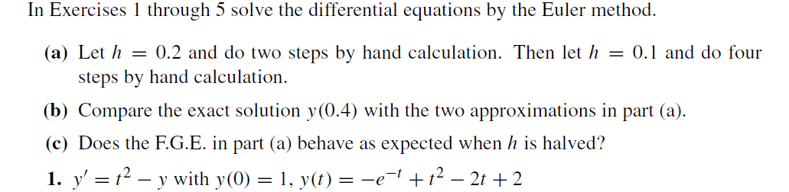

(a)
y(0.2)=y(0)+hy′(0,y(0))=1+0.2(02−1)=0.8
y(0.4)=y(0.2)+hy′(0.2,y(0.2))=0.8+0.2(0.22−0.8)=0.648
y(0.1)=y(0)+hy′(0,y(0))=1+0.1(02−1)=0.9
y(0.2)=y(0.1)+hy′(0.1,y(0.1))=0.9+0.1(0.12−0.9)=0.811
y(0.3)=y(0.2)+hy′(0.2,y(0.2))=0.811+0.1(0.22−0.811)=0.7339
y(0.4)=y(0.3)+hy′(0.3,y(0.3))=0.7339+0.1(0.32−0.7339)=0.66951
(b)
| tk |
yk |
|
y(tk) Exact |
|
h=0.2 |
h=0.1 |
|
| 0.4 |
0.648 |
0.66951 |
0.689679953964361 |
(c)
| h |
Number of steps, M |
F.G.E. Error at t=0.4 |
| 0.4 |
2 |
0.041679953964361 |
| 0.2 |
4 |
0.020169953964361 |
∴0.020169953964361/0.041679953964361=0.483924573947649≈0.5
∴Yes

(a)
y0(0.2)=y(0)+hy′(0,y(0))=1+0.2(02−1)=0.8
y(0.2)=y(0)+h(y′(0,y(0))+y′(0.2,y0(0.2)))/2=1+0.2((02−1)+(0.22−0.8))/2=0.824
y0(0.4)=y(0.2)+hy′(0.2,y(0.2))=0.824+0.2(0.22−0.824)=0.6672
y(0.4)=y(0.2)+h(y′(0.2,y(0.2))+y′(0.4,y0(0.4)))/2=0.824+0.2((0.22−0.824)+(0.42−0.6672))/2=0.69488
y0(0.1)=y(0)+hy′(0,y(0))=1+0.1(02−1)=0.9
y(0.1)=y(0)+h(y′(0,y(0))+y′(0.1,y0(0.1)))/2=1+0.1((02−1)+(0.12−0.9))/2=0.9055
y0(0.2)=y(0.1)+hy′(0.1,y(0.1))=0.9055+0.1(0.12−0.9055)=0.81595
y(0.2)=y(0.1)+h(y′(0.1,y(0.1))+y′(0.2,y0(0.2)))/2=0.9055+0.1((0.12−0.9055)+(0.22−0.81595))/2=0.8219275
y0(0.3)=y(0.2)+hy′(0.2,y(0.2))=0.8219275+0.1(0.22−0.8219275)=0.74373475
y(0.3)=y(0.2)+h(y′(0.2,y(0.2))+y′(0.3,y0(0.3)))/2=0.8219275+0.1((0.22−0.8219275)+(0.32−0.74373475))/2=0.7501443875
y0(0.4)=y(0.3)+hy′(0.3,y(0.3))=0.7501443875+0.1(0.32−0.7501443875)=0.68412994875
y(0.4)=y(0.3)+h(y′(0.3,y(0.3)+y(0.4,y0(0.4))))/2=0.7501443875+0.1((0.32−0.7501443875)+(0.42−0.68412994875))/2=0.6909306706875
(b)
| tk |
yk |
|
y(tk) Exact |
|
h=0.2 |
h=0.1 |
|
| 0.4 |
0.69488 |
0.6909306706875 |
0.689679953964361 |
(c)
| h |
Number of steps, M |
F.G.E. Error at t=0.4 |
| 0.4 |
2 |
0.005200046035639 |
| 0.2 |
4 |
0.001250716723139 |
∴0.001250716723139/0.005200046035639=0.240520317429326≈0.25
∴No

(a)
由
function [y] = my_rk4(f, t1, y1, h, M)
y = y1;
t = t1;
for i = 1:M
y = RK41step(f, t, y, h);
t = t + h;
end
end
function [y2] = RK41step(f, t1, y1, h)
k1 = f(t1, y1)
k2 = f(t1 + 0.5 * h, y1 + 0.5 * k1 * h)
k3 = f(t1 + 0.5 * h, y1 + 0.5 * k2 * h)
k4 = f(t1 + h, y1 + k3 * h)
y2 = y1 + (k1 + 2 * k2 + 2 * k3 + k4) * h / 6
end
function [d] = f(t, y)
d = t^2 - y;
end
k1=−1
k2=−0.89
k3=−0.901
k4=−0.7798
y(0.2)=0.8213
k1=−0.7813
k2=−0.6531
k3=−0.6660
k4=−0.5281
y(0.4)=0.689687853777778
k1=−1
k2=−0.9475
k3=−0.9501
k4=−0.8950
y(0.1)=0.9052
k1=−0.8952
k2=−0.8379
k3=0.8408
k4=−0.7811
y(0.2)=0.8213
k1=−0.7813
k2=−0.7197
k3=−0.7228
k4=−0.6590
y(0.3)=0.7492
k1=−0.6592
k2=−0.5937
k3=−0.5970
k4=−0.5295
y(0.4)=0.689680432829764
(b)
| tk |
yk |
|
y(tk) Exact |
|
h=0.2 |
h=0.1 |
|
| 0.4 |
0.689687853777778 |
0.689680432829764 |
0.689679953964361 |
(c)
| h |
Number of steps, M |
F.G.E. Error at t=0.4 |
| 0.4 |
2 |
7.899813416756274×10−6 |
| 0.2 |
4 |
4.788654031084860×10−7 |
∴4.788654031084860×10−7/7.899813416756274×10−6=0.0606≈0.0625
∴No

>> rk4(@f,0,0+0.1*20,1,20)
ans =
0 1.0000
0.1000 0.9052
0.2000 0.8213
0.3000 0.7492
0.4000 0.6897
0.5000 0.6435
0.6000 0.6112
0.7000 0.5934
0.8000 0.5907
0.9000 0.6034
1.0000 0.6321
1.1000 0.6771
1.2000 0.7388
1.3000 0.8175
1.4000 0.9134
1.5000 1.0269
1.6000 1.1581
1.7000 1.3073
1.8000 1.4747
1.9000 1.6604
2.0000 1.8647
>> rk4(@f,0,0+0.05*40,1,40)
ans =
0 1.0000
0.0500 0.9513
0.1000 0.9052
0.1500 0.8618
0.2000 0.8213
0.2500 0.7837
0.3000 0.7492
0.3500 0.7178
0.4000 0.6897
0.4500 0.6649
0.5000 0.6435
0.5500 0.6256
0.6000 0.6112
0.6500 0.6005
0.7000 0.5934
0.7500 0.5901
0.8000 0.5907
0.8500 0.5951
0.9000 0.6034
0.9500 0.6158
1.0000 0.6321
1.0500 0.6526
1.1000 0.6771
1.1500 0.7059
1.2000 0.7388
1.2500 0.7760
1.3000 0.8175
1.3500 0.8633
1.4000 0.9134
1.4500 0.9679
1.5000 1.0269
1.5500 1.0903
1.6000 1.1581
1.6500 1.2305
1.7000 1.3073
1.7500 1.3887
1.8000 1.4747
1.8500 1.5653
1.9000 1.6604
1.9500 1.7602
2.0000 1.8647
(b)
| tk |
yk |
|
y(tk) Exact |
|
h=0.1 |
h=0.05 |
|
| 2 |
1.864666364534275 |
1.864664817490470 |
1.864664716763387 |
(c)
| h |
Number of steps, M |
F.G.E. Error at t=0.4 |
| 0.1 |
20 |
1.647770887736044×10−6 |
| 0.05 |
40 |
1.007270828967677×10−7 |
∴1.007270828967677×10−7/1.647770887736044×10−6=0.0611≈0.0625
∴No
(d)
由
y=@(t)-exp(-t)+t^2-2*t+2;
plot(2, y(2), 'o')
hold on
R1 = rk4(@f,0,0+0.1*20,1,20)
plot(R1(:, 1), R1(:, 2), 'b')
R2 = rk4(@f,0,0+0.05*40,1,40)
plot(R2(:, 1), R2(:, 2), '-.')
xlabel('t')
ylabel('y')
legend('Exact', 'h=0.1', 'h=0.05')